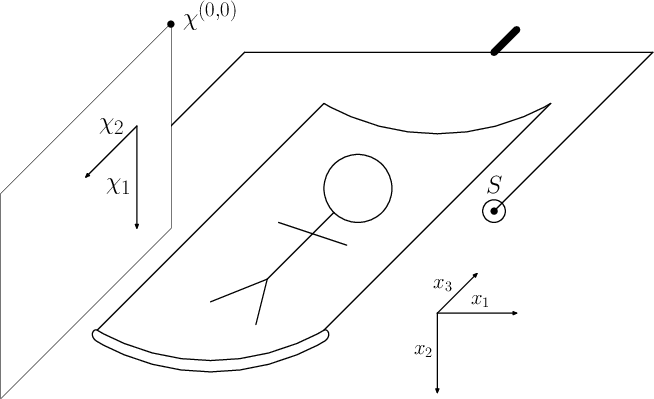

Working with KCT CBCT 2 Projective geometry and camera matrices to describe CT geometry
Before we define particular geometry corresponding to the flat panel detector CT trajectory, we need to know some theory about projective geometry and camera matrices. This will be the content of this post.
CT projections geometry
In the computer tomography, we project 3D object in $ \mathbb{R}^3 $ to the projector grid. Let's say it is a two dimensional grid that consist of rectangular pixels. Natural space of the detector when considering discretization is $ \mathbb{R}^2 $ as the projections are 2D images. The process of the projection is analogous to the pinhole camera model that projects the scene onto the 2D plane. And therefore projective geometry is a good tool to study this correspondence.
Projective geometry
Projective space is a structure on top of an Vector space $\mathbf{V}$ that is not a vector space itself. For an introduction into the projective geometry, see class notes of Nigel Hitchin. I will follow some of its definitions
The projective space $\mathcal{P}(\mathbf{V})$ of a vector space $\mathbf{V}$ is a set of one dimensional subspaces of $\mathbf{V}$. The dimension of $\mathcal{P}(\mathbf{V})$ is $dim(\mathbf{V}) - 1$. Projective space of dimension $1$ is called projective line and projective space of dimension $2$ is called projective plane.
It is interesting to see in this definitions, that when we take the space $\mathbb{R}^3$, where the source is placed in its origin. We constract "a set of one dimensional subspaces of $\mathbb{R}^3$", which are all the lines through the origin representing all the rays going from the source. The number of lines with this characteristic is (almost) the same as the number of the points on the unit half sphere. We however will be projecting this structure onto the planar detector.
Construction of camera matrices
Let's have the following FDCT setup

The configuration is uniquely determined by the position of the source $\vec{s} = (s_0, s_1, s_2)$ in the word coordinates, position of the principal point $\vec{p} = (p_0, p_1, p_2)$ that is a point on the detector such that the line |\vec{s} \vec{p}| is orthogonal to the detector surface. The ray defined by that line is called the principal ray. Apart from that we have to define position of the zero on the detector, size of the detector pixels. All this information can be embedded in the camera matrix.
Size of the detector by means of the
Let's suppose we have a source position $\vec{s} = (s_0, s_1, s_2)$ and that the $z$ axis of the geometry is the axis of the rotation. We further assume that principal ray hits the detector in its center and at the same time principal ray is orthogonal to $z$ axis. Lets $A$ be the distance from the source to detector $(P_0, P_1)$ be the sizes of the detector pixels in the units of the coordinates $(x,y,z)$ that are isometric. There is $M \times N$ detector pixels. Its axes will be $\chi_1$ and $\chi_2$, where $\chi_1$ will be orthogonal to $z$ and $\chi_2$ will be parrallel to $z$ with oposite orientation. Orientation of the world coordinates will be as it is described here. By angle $\omega$ we describe polar angle that principal ray from the detector to source has with $xy$ axes.
{kind=link}
From this information we construct camera matrix for given projection setup. First we transform $(x,y,z)$ to the $(x' , y' , z' )$ that is centered in the source position. First as on the projections $\chi_2$ coordinate is usually encoded going from the top to bottom we would like to identify positive direction of $\chi_2$ with negative direction of $z$ by means of $z'=-z$. We rotate the geometry in the way that $y'$ will be in the direction of principal ray and $x'$ will be colinear with $\chi_1$ on the detector. So we use the following projective element $$ \mathbb{X}_1 = \begin{pmatrix} \sin{\alpha}& -\cos{\alpha} &0 &0 \\ \cos{\alpha}& \sin{\alpha}&0 &0 \\ 0&0&-1&0 \\ 0&0&0&1 \end{pmatrix}, $$ where $\alpha = \atantwo{(-s_1, -s_0)}$.